Installing The Theme
Please extact your theme download package from themeforest first, you will find below folder structure :
- Documentation
- Licence
- PSD
- Sample data
- Theme
- vulcan.zip
You'll want to install this theme just like any other WordPress theme, either by uploading the main theme folder via FTP (unzipped) or the zipped file via the Wordpress theme upload section
Using FTP
- Log into your site via FTP
- Browse to your folder located at wp-content/themes
- Go to Theme folder and unzip vulcan.zip file and upload vulcan theme folder
- Log Into Wordpress and go to Apperance --> Themes
- Find the theme and click to activate
Using Wordpress
- Log into your WP dashboard
- Browse to Apperance --> Themes
- Click to "add new" and then follow the instructions on the screen
- When it askes to select a file find the zipped vulcan.zip file in Theme folder
Uploading The Sample Data
This theme includes a sample.xml data file which will allow you to upload some dummy content to your site to help you get started with the theme.
- Unzip the folder you downloaded from themeforest
- Browse to the folder called "Sample Data"
- Find the vulcan-sample-data.xml file
- Log into WordPress
- Go to Tools --> Import
- Click on "WordPress"
- If you don't have it already, install the plugin. Once done, return to the previous screen
- Click to select your file
- Choose the "vulcan-sample-data.xml" file located previously
Featured Images & Post Types
This section will cover some of the basics of this theme.
Featured Images
You must know how to add featured images to your theme, it's locate at the right hand side of the page when you creating your pages, posts, slideshow, clients and portfolio items.
Below the steps how to set the Featured Image
- Click Set Featured Image button label
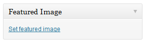 - The popup window lightbox will be appeared
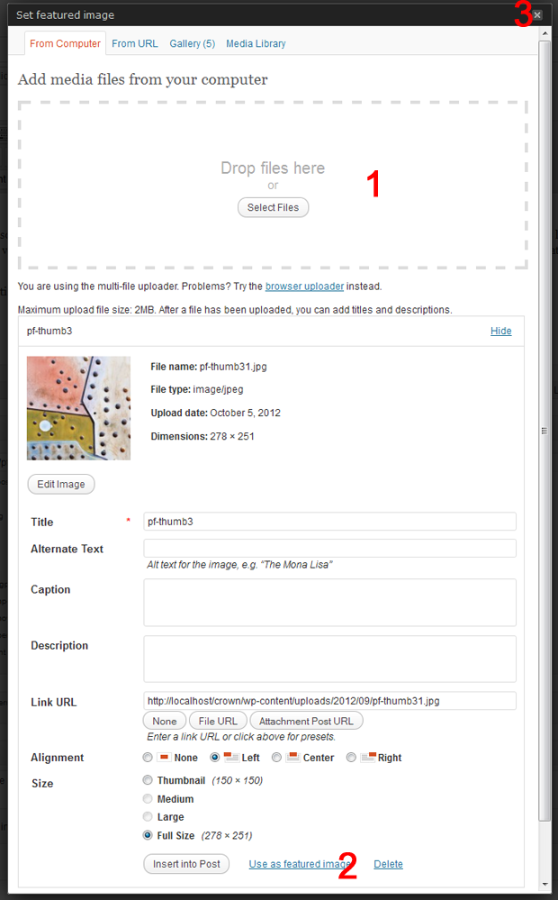- Drag and drop your image that will be used for Featured Image
- Click Use as featured image button label
- close the window and publish your content
Custom Post Types
This theme comes with some powerful custom post types that makes adding content to your site a breeze. There are some custom post types in vulcan theme :
- Portfolio
- Slideshow
- Client
- Testimonial
- Staff
or you can refer to image below
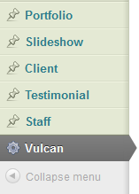Homepage Settings
By default this theme will automatically setup a homepage layout just like the demo with a slider and some of homepage sections, you just need to create slideshow and configure the theme options => homepage tab first.
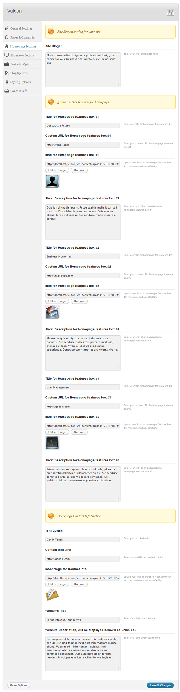
Important
If you are NOT using a static page as your home and want your homepage to look like the one in the demo, make sure under "Settings --> Reading". The "Front page displays" "Your latest posts ".
Creating Slideshow Items
To create slideshow item, please go to Slideshow => Add new menu and please follow below images :
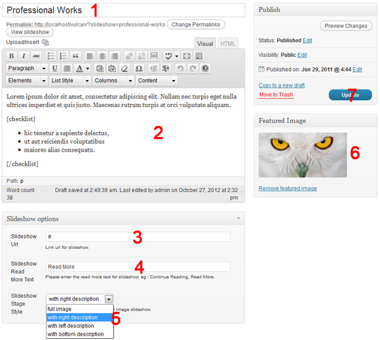
- Add your slideshow title
- Add your slideshow content
- Add your slideshow Custom Slideshow URL
- Add custom text for slideshow button
- Add your slideshow stage style (full image, with right description, with left description, with bottom description)
- Set your image at Featured Image box, you can upload the new image from Media Uploader or using existing image from Media Library
- Publish your slideshow item
Slideshow Settings
Below the example of Slideshow Settings, you can manage this from Apperance => Theme options => Slideshow Tabs
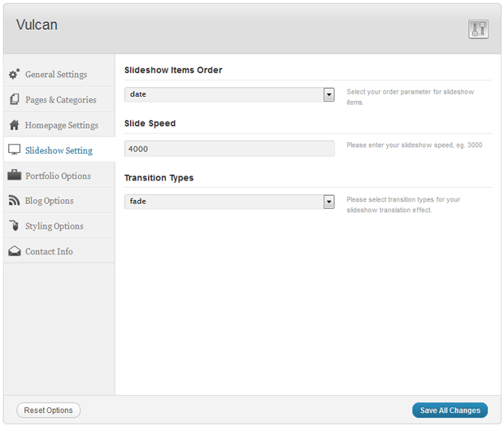
General Settings
Below the example of General Settings, you can manage this from Apperance => Theme options => General Tabs
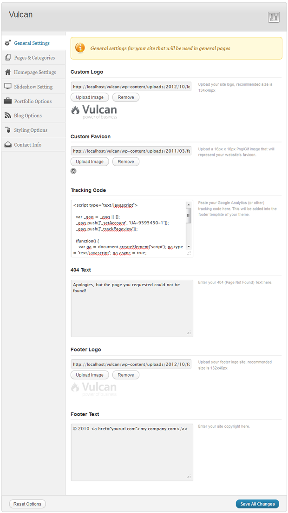
General Page Options
When you creating a page, there's Page Options below the editor, please refer to below image for detail
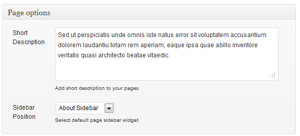
- Short Description : add your page description here
- Sidebar Position : set your sidebar widget for your page, you can manage your widget first from Appearance => Widgets menu
Adding Client Items & Client Page
To add client items, you can do this from Client => Add New menu in your admin panel, please below image for detail
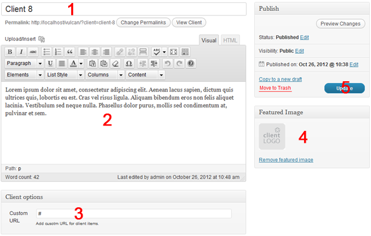
- Add your title
- Add your content, you can use shortcode here
- Add your client custom url in Client Option => Custom Client url field
- Set your client image at Featured Image box
- Publish your client item
Adding Client Page
To create client page, please go to Pages => Add new menu, and assign your page to Client Page Template, please follow below image for detail
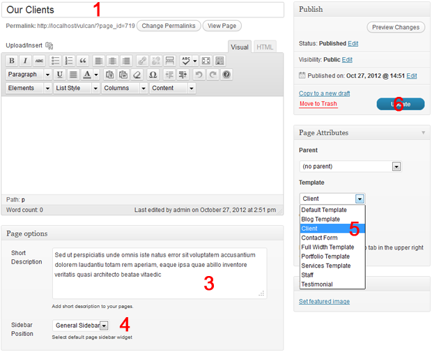
- Add your title
- Add your page description here
- Set your sidebar widget for your page, you can manage your widget first from Appearance => Widgets menu
- Assign your page to Client page template in Page Attributes box
- Publish your page
Adding Staff Items & Staff Page
To add staff items, you can do this from Staff => Add New menu in your admin panel, please below image for detail
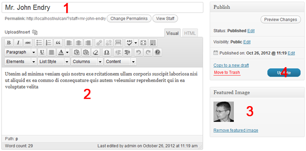
- Add your title
- Add your content, you can use shortcode here
- Fill each social links
- Set the staff image at Featured Image box
- Publish your staff item
Adding Staff Page
To create client page, please go to Pages => Add new menu, and assign your page to Client Page Template, please follow below image for detail
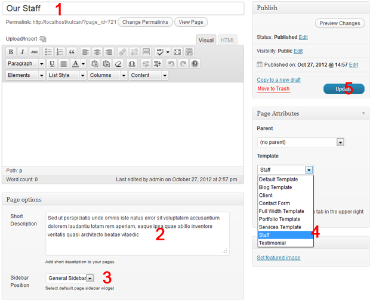
- Add your title
- Add your uploaded image url for page heading image, the recommended size is 1090x348px
- Add your page description here
- Set your sidebar widget for your page, you can manage your widget first from Appearance => Widgets menu
- Assign your page to Staff page template in Page Attributes box
- Publish your page
Adding Testimonial Items & Testimonial Page
To add testimonial items, you can do this from Client => Add New menu in your admin panel, please below image for detail
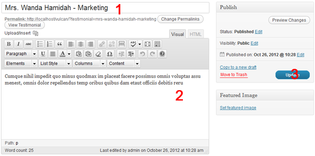
- Add your title
- Add your content, you can use shortcode here
- Publish your client item
Adding Testimonial Page
To create client page, please go to Pages => Add new menu, and assign your page to Client Page Template, please follow below image for detail
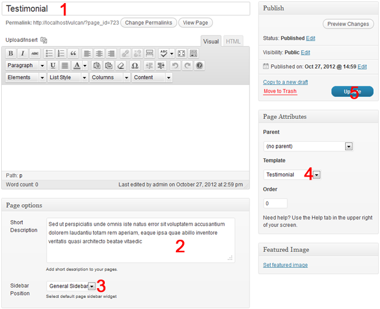
- Add your title
- Add your page description here
- Set your sidebar widget for your page, you can manage your widget first from Appearance => Widgets menu
- Assign your page to Testimonial page template in Page Attributes box
- Publish your page
Creating A Portfolio Page
There's 2 Portfolio page template available in vulcan theme, you can choose one of theme as your default portfolio page template, to create portfolio page, please follow below image :
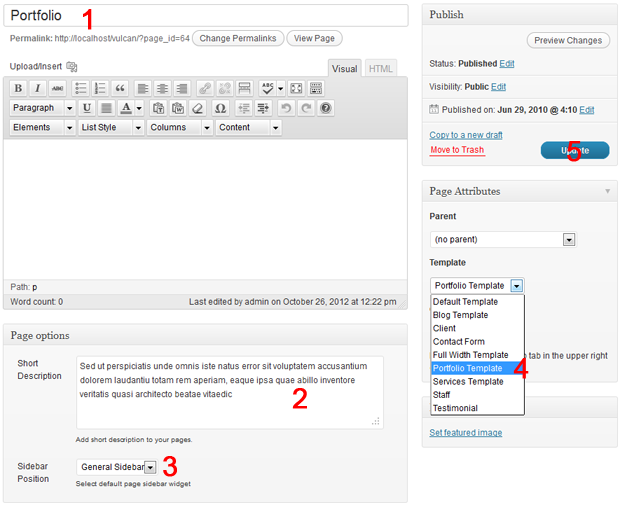
- Add your page title
- Add your page short description
- Please ignore this option
- assign your portfolio page to Portfolio page template
- publish your page
Adding Portfolio Items
To create / adding portfolio items, please click Portfolio => Add New and please follow below image
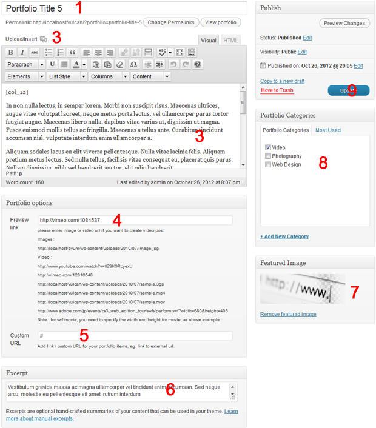
- Add your portfolio title
- Click Media upload button, upload some images in media uploader, you can easily drag and drop your images or use from existing uploaded images library, this will be used for portfolio slider
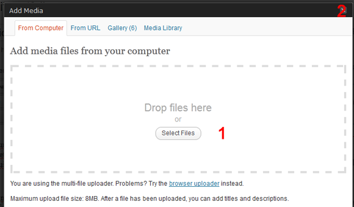
- Upload your images that will be used as portfolio slider /gallery by drag and drop the images from your computer
- When upload process finish, just close the upload window box
- Add your content by using columns shortcode
- Add your preview link for portfolio items, will be used for window popup lightbox
- Add your portfolio excerpt, will be used for portfolio items list in portfolio page
- Set your portfolio thumbnail from Featured Image box
- Set your portfolio category
- Publish your portfolio
Portfolio Options
There's portfolio option that you can manage from Apperance => Theme Options => Portfolio tab, below the example of configuration

Creating A Services Page
To create parent services page, you just need to create a page, please below image for detail

- Add your page title
- Add your page content
- Add your page short description
- assign your portfolio page to Services page template
- publish your page
Adding Services Child Pages Item
To create child pages for your services page, please follow below image

- Add your page title
- Add your page content
- Add your page short description
- Select the page sidebar position
- Add page excerpt
- Set your thumbnail in Featured Image box
- Set your parent page (Services)
- Publish
Creating The Blog Page

- Add your page title
- Add your page short description
- Select the page sidebar position
- assign your portfolio page to Blog page template
- publish your page
Be Sure you have created a category for your blog and add some post items there, also you need to configure the Appearance => Theme Options => Blog Options

Shortcodes
The theme has a built-in shortcodes editor..
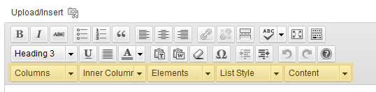
For complete shortcodes list and documentation, please visit http://wp-demo.indonez.com/Vulcan/?page_id=555
Creating Contact Page
You just need to create regular page and assing your page to Contact Form page template, please refer to below image for detail
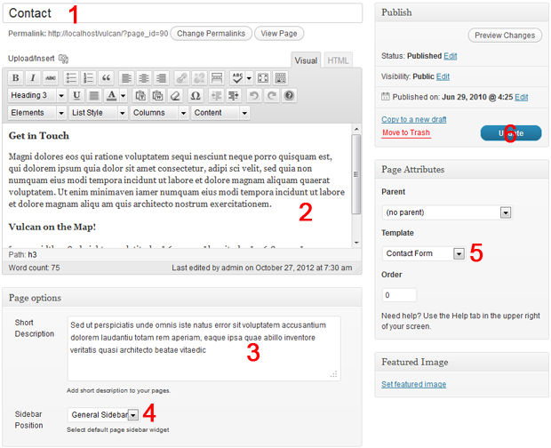
- Add your page title
- Add your contact page content, you can use google map shortcode here
- Add your page short description
- Select the page sidebar position
- assign your portfolio page to Contact Form page template
- publish your page
Contact Options
You can manage this from theme options => Contact tab
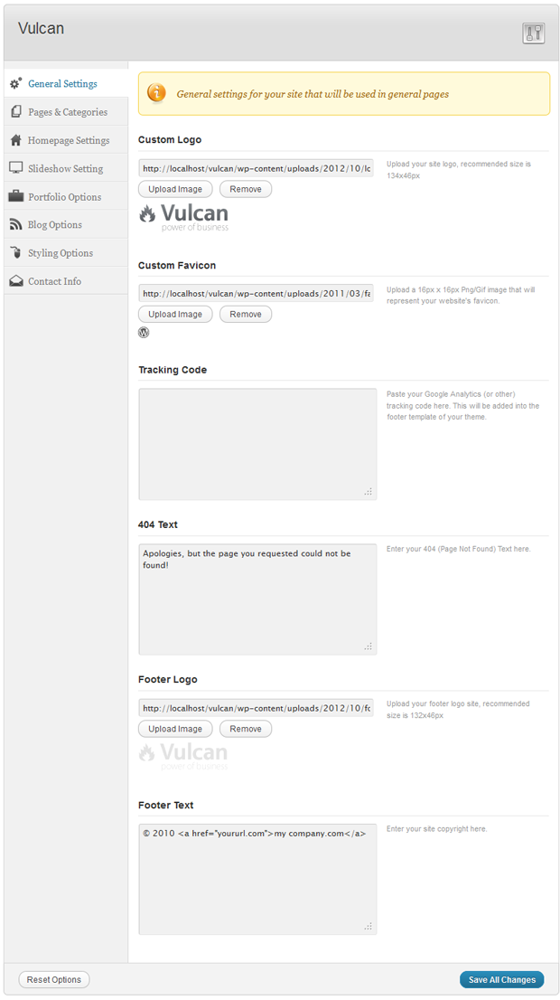
Styling Options
You can manage your site styling from Appearance => Theme Options => Styling tab, below the detail image

Translating The Theme
This theme has been localized and it includes a .po and .mo file so you can translate the theme to your own language.
Step 1: Copy Default.po File
Located in the "languages" folder of the theme is a file called default.po. Copy this file to your desktop for editing.
Step 2: Edit Default.po File
Open the .po file using a program like PoEdit.
Click on the text to edit and enter your translation in the bottom box
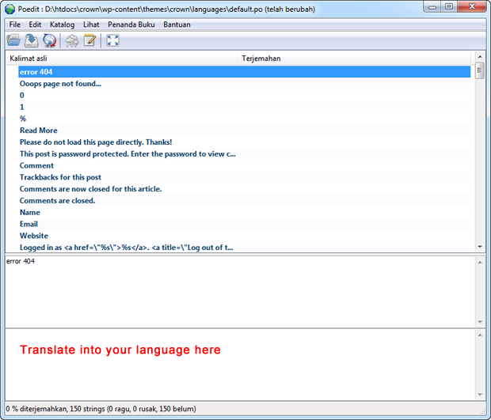
Step 3: Save Default.po File
Next you have to save your .po file using the naming convention is based on the language code (e.g. pt for Portuguese) followed by the country code (e.g. _BR for Brazil). So, the Brazilian Portuguese file would be called pt_BR.po.
When saing your .po it will automatically create a new .mo file for you, with the same naming convention ( so using the example above, the file would be called pt_BR.mo
Step 4: Upload New Files
Upload the .po and .mo files you just created to your /languages folder so they are in the same directory as the default.po and default.mo
Step 5: Edit Your WP-Config File
The last step is to tell WordPress what languange to show
Open your wp-config.php file in a text editor and search for:
define ('WPLANG', '');
Edit this line according to the .mo file you've just downloaded, e.g. for the Portuguese spoken in Brazil you must add:
define ('WPLANG', 'pt_BR');
Resources Used
The following resources where used in the development of this theme:
Script Library
- jQuery - http://jquery.com/
- jQuery Cycle - http://jquery.malsup.com/cycle
- jQuery GMap - http://github.com/marioestrada/jQuery-gMap
- jQuery Tweet - http://tweet.seaofclouds.com
- jQuery Tools Tabs - http://flowplayer.org/tools/tabs/
- Options Frameworks Theme - https://github.com/devinsays/options-framework-theme
- http://babasse.deviantart.com/art/iMod-for-Dock-102546179
- http://pc.de/icons/
- http://pc.de/icons/
- http://www.fontspace.com/arro/vegur
Images
- http://www.sxc.hu/browse.phtml?f=view&id=155127 - used on homepage slideshow
- http://www.sxc.hu/browse.phtml?f=view&id=858774 - used on homepage slideshow
- http://www.sxc.hu/browse.phtml?f=view&id=934454 - used on homepage slideshow
- http://www.sxc.hu/browse.phtml?f=view&id=462639 - used on about page
- http://www.sxc.hu/browse.phtml?f=view&id=1196034 - used on about page
- http://www.sxc.hu/browse.phtml?f=view&id=727728 - used on about page
- http://www.sxc.hu/browse.phtml?f=view&id=956981 - used on about page
- http://www.sxc.hu/browse.phtml?f=view&id=36319 - used on blog page
- http://www.sxc.hu/browse.phtml?f=view&id=859965 - used on blog page
- http://www.sxc.hu/browse.phtml?f=view&id=1072482 - used on blog page